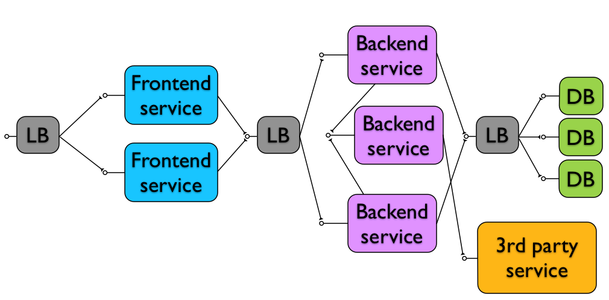
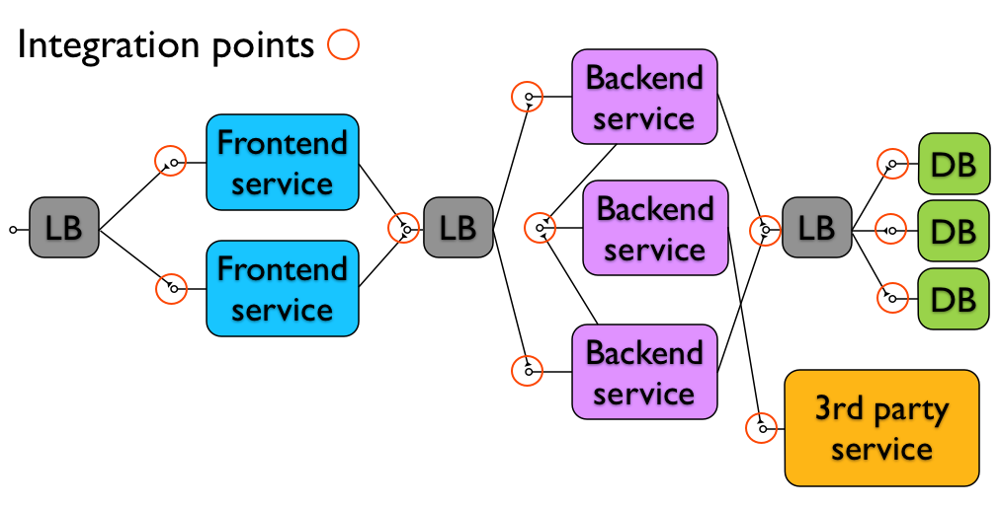
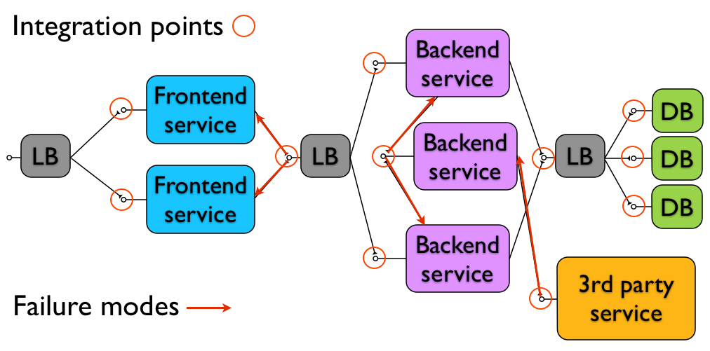
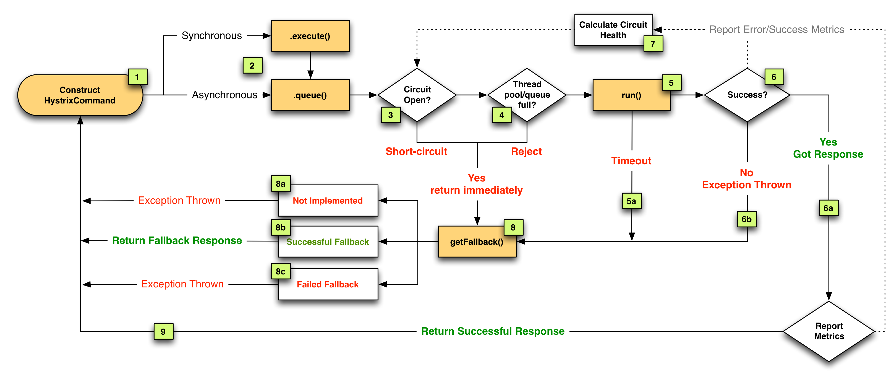

Cynical software
Tips for writing software that do not wake you up (or your girlfriend) at 2am (sometimes)
Created by Roman Pichlík / @_dagi
Cynicism
“Cynicism is merely the art of seeing things as they are instead of as they ought to be”
-- Oscar Wilde
How to become cynical
Eat your own dog food
Strong feedback
Pager Duty
DevOps
No throw over the wall syndrome (won’t fix)
World of abstractions
The world we actually live in
Is it safe?
try(FileInputStream is = new FileInputStream())){
is.read();
}
It depends...
Many abstraction
Network is unreliable
There is only one certainty - bugs will happen
Motto
“Cynical software expects bad things to happen and is never surprised when they do. Cynical software doesn't even trust itself, so it puts up internal barriers to protect itself from failures. It refuses to get too intimate with other systems, because it could get hurt.”
-- Michael T. Nygard, Release It!: Design and Deploy Production-Ready Software
Cynical software principles
Architecture
Organization structure
Operations
Architecture
Services
Isolation
Maintenance
Scalability
Minimalistic design
Postpone key decisions
Easy to revert
Big Up Front Design sucks
Architecture of current applications
Integration points
Failure modes
Not a cynical demo
Stability patterns
Bulkheads
Circuit breaker
Bulkheads

Isolation
Circuit breaker
Fail fast
Recovery
Degrading functionality
Timeouts
A cynical demo, time for Hystrix
HystrixCommand
Stability patterns All-In-One
Monitoring
Organization structure
Conway's law
“organizations which design systems ... are constrained to produce designs which are copies of the communication structures of these organizations.”
-- Melvin E. Conway
Let's it works for you
Operations
Visibility
Blackbox
Whitebox
Healthchecks
Smoketests
Dashboards
JMX
Monitoring (alerting)
Management